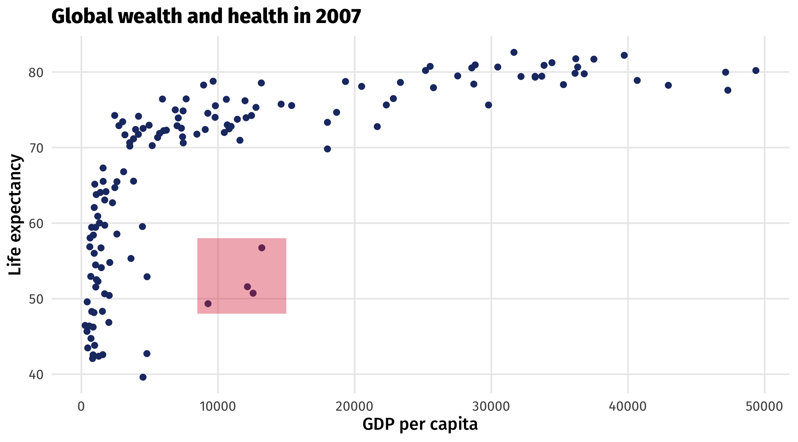
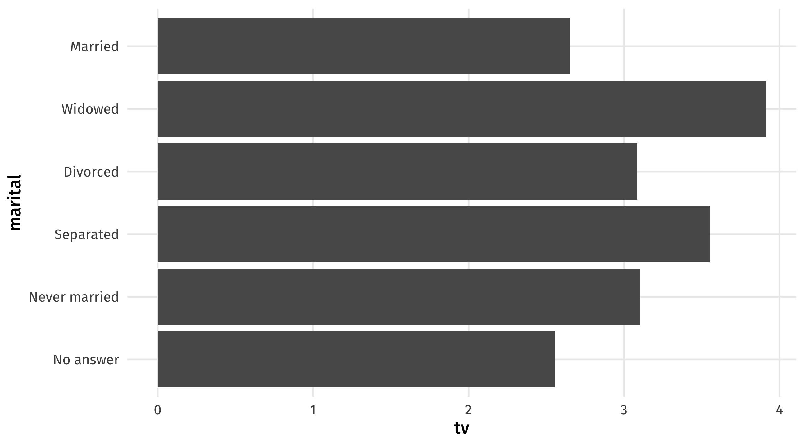

| id | age | degree | race | num_kids |
|---|---|---|---|---|
| 1 | 47 | Bachelor | White | 3 |
| 2 | 61 | High School | White | 0 |
| 3 | 72 | Bachelor | White | 2 |
| 4 | 43 | High School | White | 4 |
| 5 | 55 | Graduate | White | 2 |
Data visualization II
POL51
October 1, 2024
Get ready
- Boot up Posit Cloud
- Download the script for today’s in-class examples:
- Schedule ➡️ Week 2 ➡️ Example ➡️ Day 2
- Upload the script to Posit Cloud
Plan for today
- A graph for every season
- The five(ish) graphs
- Making graphs pretty or ugly
A graph for every season
There are many graphs out there
Each one works best in a specific context
Each one combines different aesthetics and geometries
Key plotting questions
What am I trying to show?
- (a distribution, a relationship, a comparison, an amount)
What kind of variables do I have?
- (continuous, discrete, something in between)
What aesthetics and geometries do I need for this plot?
- (x-axis, y-axis, color, size, shape, etc.)
What kind of variable do I have?
Continuous variables take on lots of values (GDP, population, income, age, etc.)
What kind of variable do I have?
| id | age | degree | race | num_kids |
|---|---|---|---|---|
| 1 | 47 | Bachelor | White | 3 |
| 2 | 61 | High School | White | 0 |
| 3 | 72 | Bachelor | White | 2 |
| 4 | 43 | High School | White | 4 |
| 5 | 55 | Graduate | White | 2 |
Discrete or categorical variables takes on a few values, often “qualitative” (yes/no, 1/0, race, etc.)
Graph 1: the scatterplot
The scatterplot visualizes the relationship between two continuous variables
Shows every point in the data, reveals trends and outliers
The grammar of scatterplots
| gdpPercap | lifeExp |
|---|---|
| 974.58 | 43.83 |
| 5937.03 | 76.42 |
| 6223.37 | 72.30 |
| 4797.23 | 42.73 |
| 12779.38 | 75.32 |
| Data | Aesthetic | Geometry |
|---|---|---|
| gdpPercap | x | geom_point() |
| lifeExp | y | geom_point() |
Scatterplots are for continuous variables
Plot is uninformative because continent is discrete (i.e., a category)
üá∫üá∏ The presidents üá∫üá∏
| year | winner | win_party | ec_pct | popular_pct | two_term |
|---|---|---|---|---|---|
| 1824 | John Quincy Adams | D.-R. | 0.32 | 0.31 | FALSE |
| 1828 | Andrew Jackson | Dem. | 0.68 | 0.56 | TRUE |
| 1832 | Andrew Jackson | Dem. | 0.77 | 0.55 | TRUE |
| 1836 | Martin Van Buren | Dem. | 0.58 | 0.51 | FALSE |
üö® Your turn üö®
Using the elections_historic dataset:
Make a scatterplot, with:
- % of popular vote (x-axis,
popular_pct) - % of electoral college vote (y-axis,
ec_pct)
- % of popular vote (x-axis,
if successful, add:
- winner’s party to
coloraesthetic (win_party) - whether or not president served two terms to
shape(two_term) - add labels to each point (
winner_label)
- winner’s party to
05:00
US Presidents
Code
# libraries
library(tidyverse)
library(socviz)
library(ggrepel)
# plot
ggplot(elections_historic, aes(x = popular_pct, y = ec_pct, label = winner_label,
color = win_party, shape = two_term, label = winner_label)) + geom_hline(yintercept = 0.5,
size = 1.4, color = "gray80") + geom_vline(xintercept = 0.5, size = 1.4, color = "gray80") +
geom_point() + geom_text_repel() + labs(x = "Percent of popular vote", y = "Percent of Electoral College vote",
title = "Presidential Elections: Popular & Electoral College Margins", subtitle = "1824-2016",
color = NULL, size = NULL) + scale_y_continuous(labels = scales::percent) + scale_x_continuous(labels = scales::percent) +
scale_color_manual(values = c(yellow, red, blue, "gray")) + theme(legend.position = "none")Graph 2: the time series
The time series uses a line to show you how a variable (y-axis) moves over time (x-axis)
The grammar of time series
| year | avg_yrs |
|---|---|
| 1952 | 49.06 |
| 1957 | 51.51 |
| 1962 | 53.61 |
| 1967 | 55.68 |
| 1972 | 57.65 |
| Data | Aesthetic | Geometry |
|---|---|---|
| year | x | geom_line() |
| avg_yrs | y | geom_line() |
The time series
üö® Your turn: üí∏Recessionüí∏ üö®
Using the economics dataset:
Make a time series, with:
- date on the x-axis (
date) - unemployment rate on the y-axis (
unemploy)
- date on the x-axis (
Can you identify the recessions?
05:00
Multiple time series
Sometimes we observe multiple units over time; how can we visualize these?
| country | continent | year | lifeExp | pop | gdpPercap |
|---|---|---|---|---|---|
| Bolivia | Americas | 1952 | 40 | 2883315 | 2677 |
| Bolivia | Americas | 1957 | 42 | 3211738 | 2128 |
| China | Asia | 1952 | 44 | 556263527 | 400 |
| China | Asia | 1957 | 51 | 637408000 | 576 |
| Denmark | Europe | 1952 | 71 | 4334000 | 9692 |
| Denmark | Europe | 1957 | 72 | 4487831 | 11100 |
What we want:
Start from scratch
Add aesthetics
Add geometry: ü§¢
Why?
In each year we have multiple points (because multiple countries), ggplot() tries to connect them all
using color to separate lines

Multiple time series
These are useful for comparing trends across units (countries, places, people, etc)
Graph 3: the histogram

A histogram shows you how a continuous variable is distributed
Interpreting histograms
The grammar of histograms
| lifeExp |
|---|
| 43.83 |
| 76.42 |
| 72.30 |
| 42.73 |
| 75.32 |
| Data | Aesthetic | Geometry |
|---|---|---|
| lifeExp | x | geom_histogram() |
The histogram
üö® Your turn: organs ü´Åü߆ üö®
In some countries, when you die it is assumed you want to donate your organs
To not donate, you have to opt out
In other countries, when you die it is assumed you do not want to donate your organs
To not donate, you have to opt in
| country | donors | opt |
|---|---|---|
| Spain | 31.5 | Out |
| United States | 20.1 | In |
| Italy | 11.6 | In |
| Finland | 17.1 | NA |
| Spain | 21.7 | Out |
üö® Your turn: organs ü´Åü߆ üö®
Using the organdata dataset:
Make a histogram of country’s organ donation rate (
donors)Then set the fill aesthetic to
opt, whether donors have to opt in or opt out of donating. How does the graph change?
05:00
Graph 4: the barplot
Barplots place a category (place, country, person, etc) on one axis and a quantity (amount, average, median, etc.) on another
Useful for making comparisons, highlighting differences
The grammar of barplots
| marital | tv |
|---|---|
| No answer | 2.56 |
| Never married | 3.11 |
| Separated | 3.55 |
| Divorced | 3.09 |
| Widowed | 3.91 |
| Data | Aesthetic | Geometry |
|---|---|---|
| tv | x | geom_col() |
| marital | y | geom_col() |
The barplot
Graph 5: the boxplot
Boxplots compare distributions of continuous variables across groups
Compare distributions: the boxplot
Boxplots contain a lot of info ü•µ:
- bold line is the median observation
- box is the middle 50% of observations
- thin lines show you min and max value, except…
- the dots, which are outlier observations

The grammar of boxplots
| continent | lifeExp |
|---|---|
| Asia | 43.83 |
| Europe | 76.42 |
| Africa | 72.30 |
| Africa | 42.73 |
| Americas | 75.32 |
| Data | Aesthetic | Geometry |
|---|---|---|
| contient | y | geom_boxplot() |
| lifeExp | x | geom_boxplot() |
The boxplot
The five(-ish) graphs
| Graph | aes() | geom_ | Purpose |
|---|---|---|---|
| Scatterplot | x = cause, y = effect | point() | Relationships |
| Time series | x = date, y = variable | line() | Trends |
| Histogram | x = cont. variable | histogram() | Distributions |
| Barplot | y = category, x = quantity | col() | Compare amounts |
| Boxplot | y = category, x = cont. variable | boxplot() | Compare distributions |
Know how and when to use which!
Making better graphs
We’ve barely scratched the surface; there’s many more aesthetics, geometries, and layers in
ggplot()Here are some of my favorite ones
And some ideas for making graphs better
Customize geometries
Change your geometries by adding arguments to geom_*(), like size, shape, color, etc.
Use different color and fill scales
scale_fill_brewer() for fill, which we use for columns, histograms, 2D stuff
Use different color and fill scales
scale_color_brewer() for color, which we use for points, lines, less than 2D stuff
My favorite scale (right now)

scale_fill_viridis_d for discrete variables, scale_fill_viridis_d for continuous
Add themes
Preset themes in tidyverse include theme_dark(), theme_light(), theme_minimal(), theme_void()
Many other custom themes
theme_spongeBob() from tvthemes package, many more online
üî• Coding challenge üî•
Right now you probably can’t make a nice graph, so:
Make the ugliest graph you can
Post it on Slack
Winner will get a shockingly small amount of extra credit
20:00